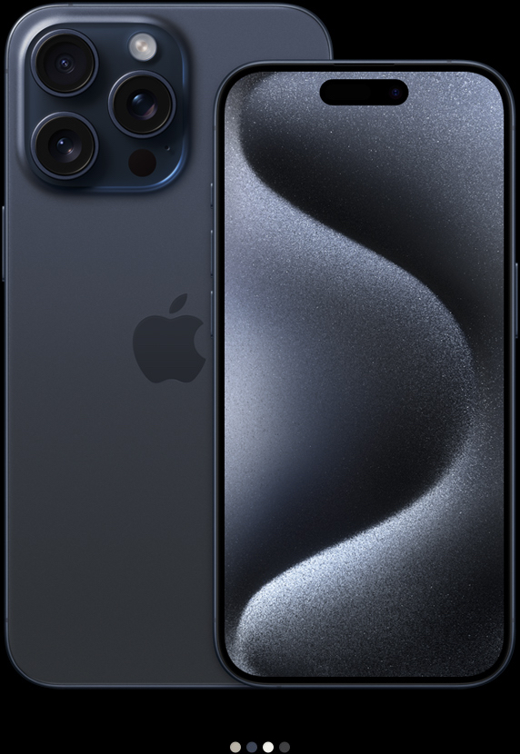

6.7 inç veya 6.1 inç
Super Retina XDR ekran dipnot
ProMotion Teknolojisi
Hep Açık ekran
A17 Pro
6 çekirdekli GPU'ya sahip A17 Pro çip
Pro kamera sistemi
48 MP Ana kamera | Ultra Geniş | Telefoto
Süper yüksek çözünürlüklü fotoğraflar (24 MP ve 48 MP)
Odak özelliğine ve Derinlik Denetimi'ne sahip yeni nesil portreler
29 saate kadar video oynatma

6.7 inç veya 6.1 inç
Super Retina XDR ekran
-
-
A16 Bionic
5 çekirdekli GPU'ya sahip A16 Bionic çip
Gelişmiş çift kamera sistemi
48 MP Ana kamera | Ultra Geniş | Telefoto
Süper yüksek çözünürlüklü fotoğraflar (24 MP ve 48 MP)
Odak özelliğine ve Derinlik Denetimi'ne sahip yeni nesil portreler
26 saate kadar video oynatma

6.7 inç veya 6.1 inç
Super Retina XDR ekran dipnot
-
-
A15 Bionic
5 çekirdekli GPU'ya sahip A15 Bionic çip
Çift kamera sistemi
12 MP Ana kamera | Ultra Geniş
-
Odak özelliğine ve Derinlik Denetimi'ne sahip portreler